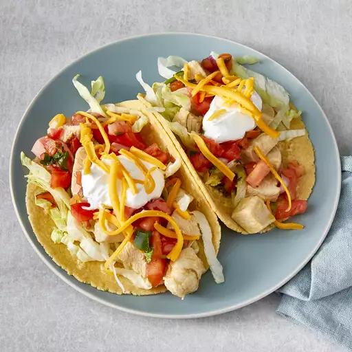

Chicken Tacos

Description
This recipe will teach you how to make (hopefully) delicious chicken tacos with a couple of simple ingredients and in only 30 minutes (prep and cook time included)
Note to reader: I've never actually made this recipe before, just lifted it off a website, so try at your own risk. :) Let's eat!
Ingredients
Here's what you'll need:
- 1 pound skinless, boneless chicken breast halves, cut into bite size pieces
- 1 cup of lemonade
- 2 tablespoons olive oil
- 1 tablespoon lime juice
- 1 ½ teaspoons Worcestershire sauce
- ½ teaspoon garlic powder
- ½ teaspoon onion powder
- 1 bay leaf
- 1 (12 ounce) package corn tortillas
- 2 large tomatoes, chopped
- 1 head lettuce, shredded
- 1 (8 ounce) package shredded sharp Cheddar cheese
- 1 (8 ounce) jar salsa
- 1 (8 ounce) container sour cream
Steps
- Combine chicken, lemonade, olive oil, lime juice, and Worcestershire sauce in a large skillet over medium heat. Stir in garlic powder, onion powder, and bay leaf. Simmer until chicken is tender and juices run clear, 15 to 20 minutes.
- Meanwhile, warm the tortillas in the oven or microwave until soft. When chicken is fully cooked, transfer to serving bowl. Place chopped tomatoes, lettuce, cheese, salsa, and sour cream in serving dishes. Each person can create their own wrap, using their preferred ingredients.